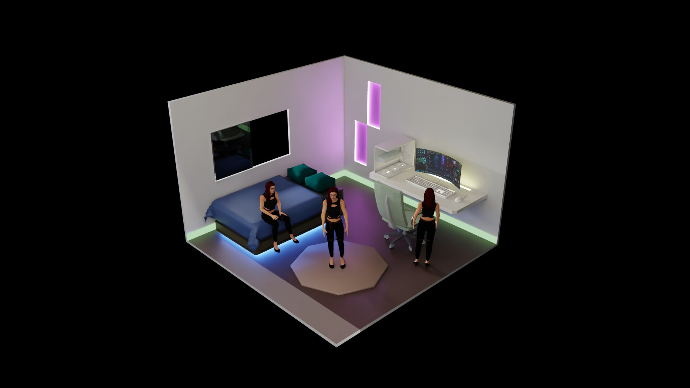

IoT agent
MAYA 3.0 bridges reasoning, sensors, and action so agents operate end-to-end in the real loop — not chat-only.
MAYA 3.0
MAYA 3.0 is our end-to-end IoT agent. Agents already think — MAYA lets them move through OpenBody2039 MCP body knowledge and intent control. Full story on www.ura2039.xyz.

From cloud mind to embodied motion — the LEGEND stack behind www.ura2039.xyz.
MAYA 3.0 bridges reasoning, sensors, and action so agents operate end-to-end in the real loop — not chat-only.
This OpenBody2039 package is the body layer: joints, morphs, poses,
intent_do — so MAYA 3.0 can wave while still alive.
Robotics, ROS2, Linux, and agent notes on www.ura2039.xyz — 热热的博客 · We are LEGEND.
Language models reason well. MAYA 3.0 adds a constrained, performable body layer for the IoT agent.
MAYA is not another chat skin. She ships joint limits, measured axis semantics, expression presets, and standing poses — so an agent can read the body, then drive it in plain language.
Wave while still blinking and breathing: control is layered, like a person — not a frozen puppet. That is the embodiment half of the MAYA 3.0 IoT agent.
Standard MCP stdio, host-agnostic. Knowledge works offline; live motion needs a local bridge and any OpenBody-compatible viewer. Deeper architecture notes: www.ura2039.xyz.
Discover → look up → act. Prefer primitives over per-joint tweaks.
Call openbody_info for capabilities and the preferred flow.
body_lookup("RightArm") or resources
openbody://body-graph/* — never invent bone names.
intent_do("wave right hand hello") → plan primitives → play →
control_release.
{
"mcpServers": {
"openbody2039-maya": {
"command": "node",
"args": ["./mcp/server.js"],
"env": { "OPENBODY_WS_URL": "ws://127.0.0.1:8787" }
}
}
}